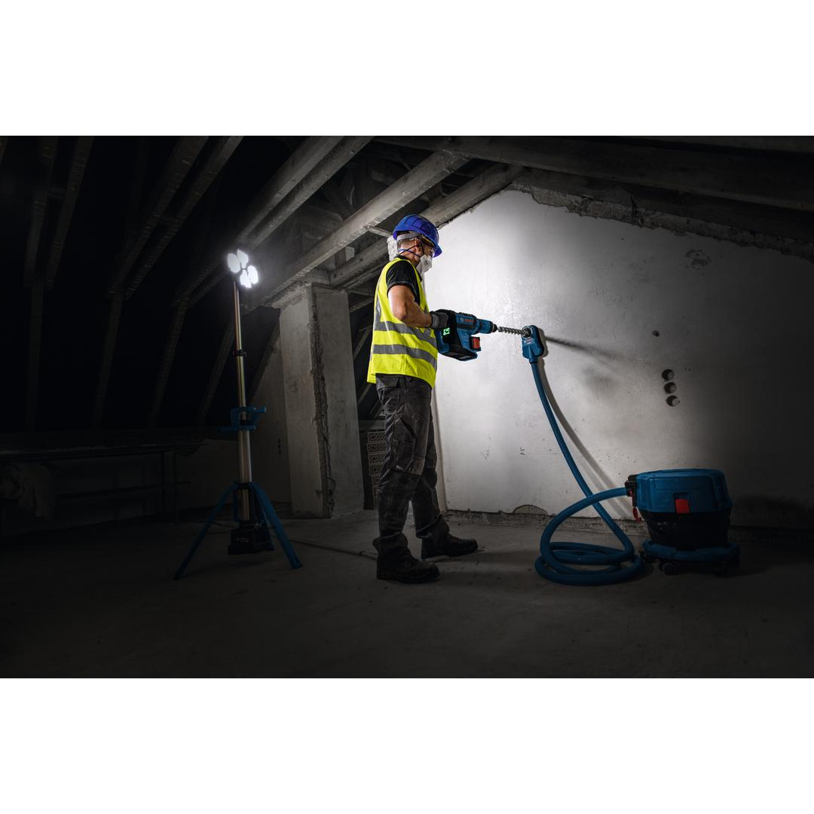
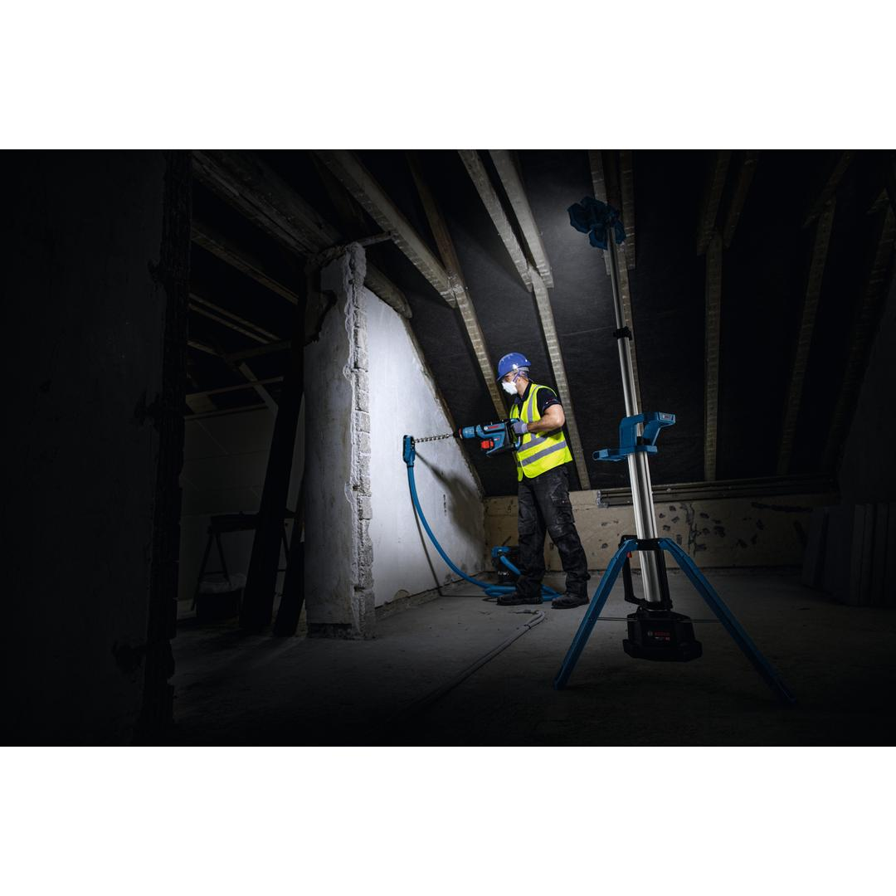
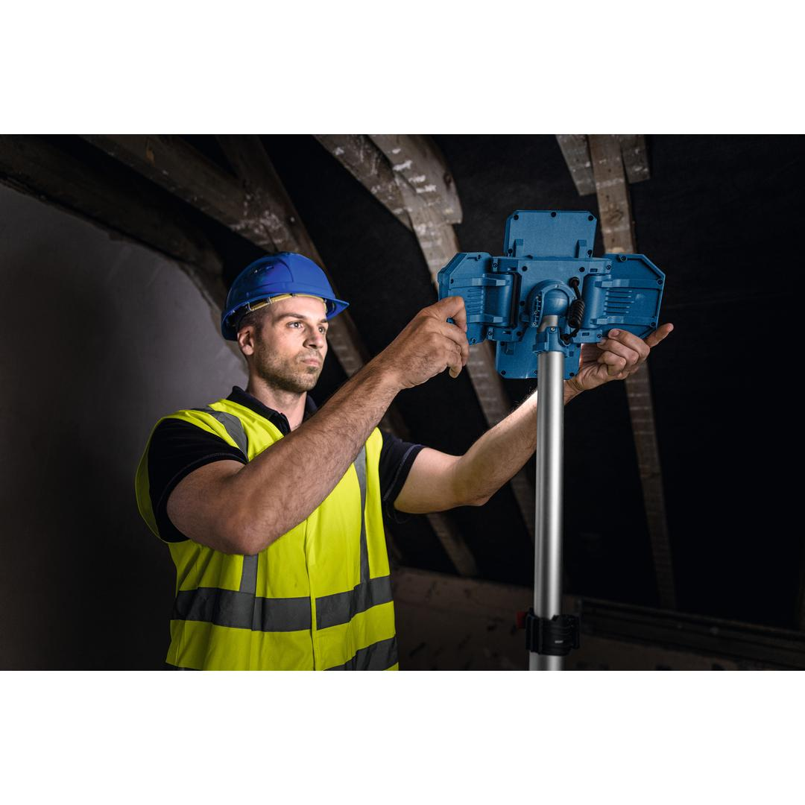
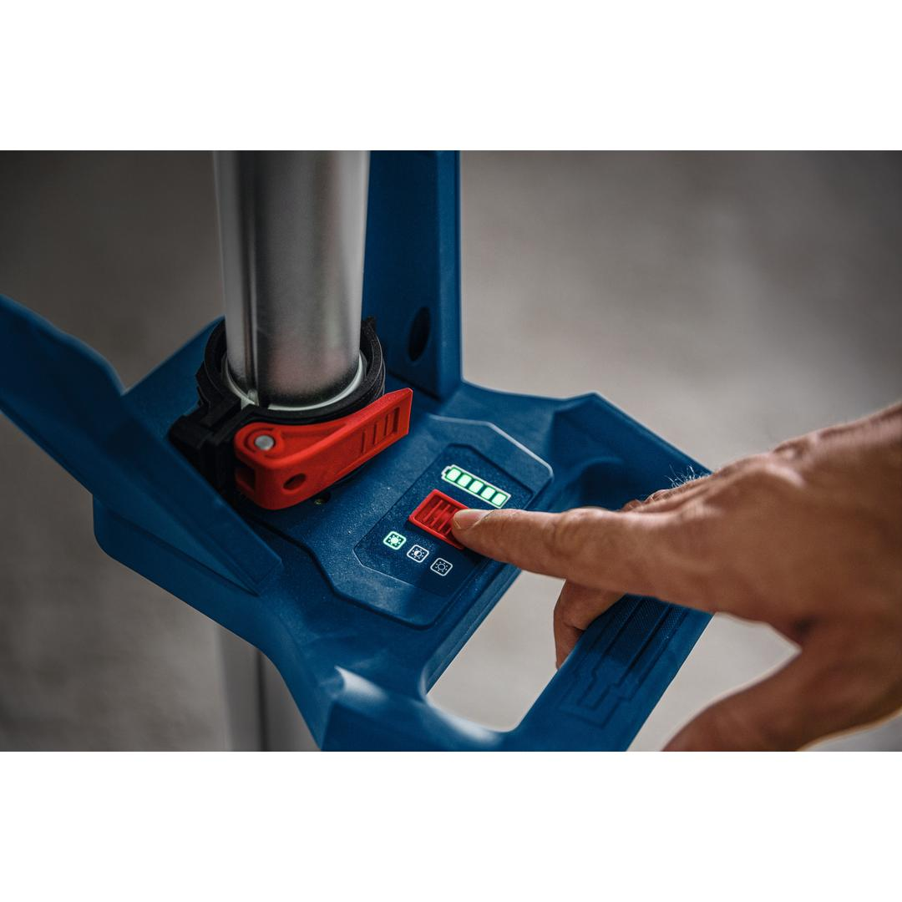
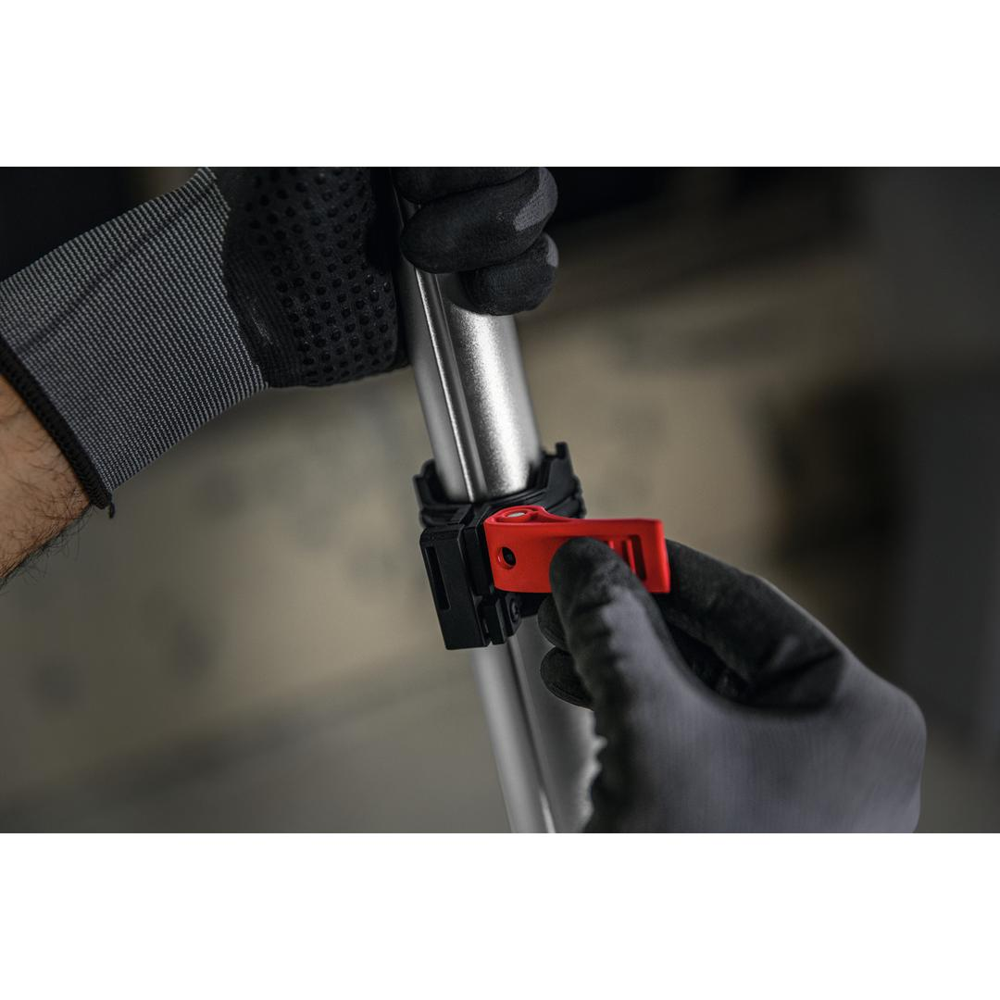
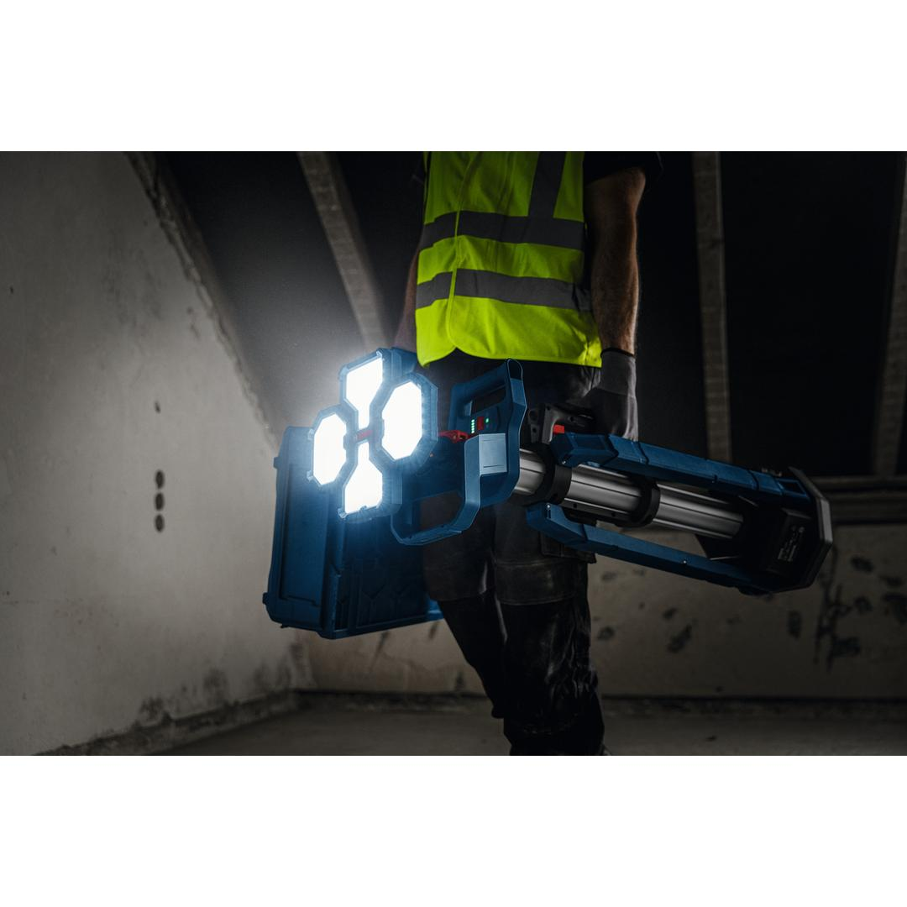
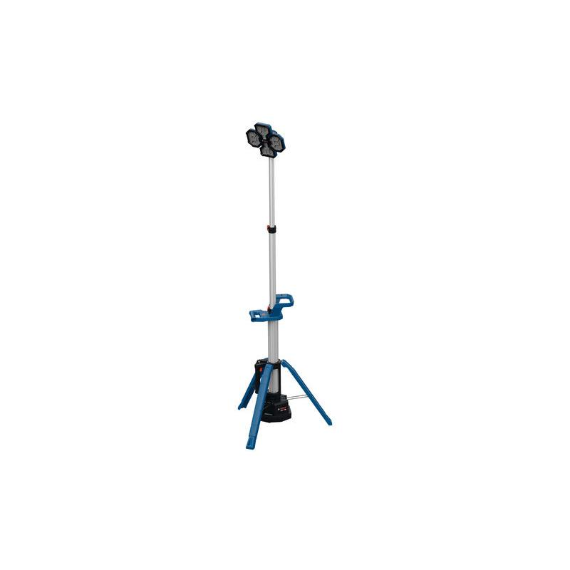

06019P5000







The PRO GLT18V-5000 provides outstanding illumination of the working area. With 3 brightness levels, the 80 LEDs can be adjusted up to 5000 lumens. The multidirectional light head allows to orient the three light heads to cast light in all directions, while the single-button control makes it easy to use. The light can be extended to 2,2 m to light overhead work or minimize shadows and reduce blinding when casting shine downward. With a few simple steps, you can set it up in less than 15 seconds and bring light to any dark corner. The tower light folds compactly and at 6,2 kg it is very easy to transport and to store. It is IP 54-rated.
| Tool dimensions (width) |
727 mm |
| Tool dimensions (length) |
727 mm |
| Tool dimensions (height) |
2200 mm |
| Battery voltage, works with |
18.0 V |
Bright light where you need it: tower light with 5000 lumens
The PRO GLT18V-5000 illuminates medium- to large-sized work areas. Compatible with the Bosch Professional 18V System and with the multi-brand battery alliance AMPShare.
It features a User Interface with brightness indication and charge level indicator.